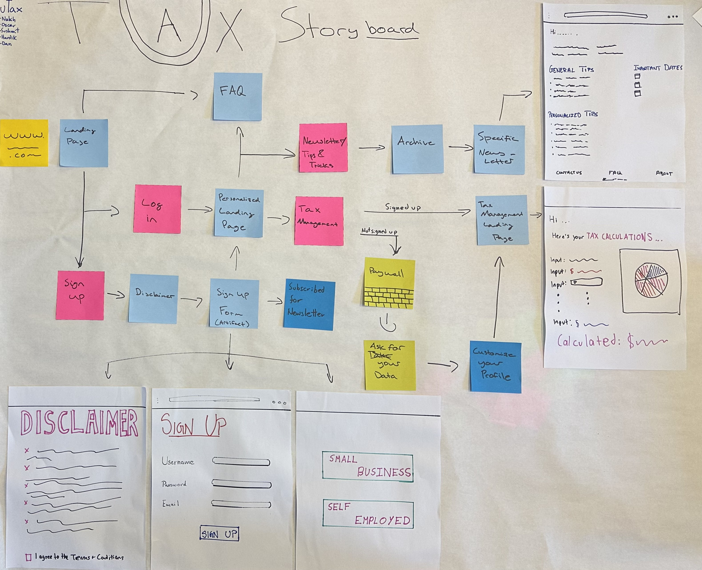

Phase 2 Report Out
Receipt Tracking for People, centered on Freelancers and Content Creators
Overview of the Phase
The goal of the phase was to understand our people group and design a solution for their financing and taxing needs. The report of this phase includes the people group we are designing for, the main problem we indefntified that we planned on solving, some low fidelity protoypes, and the design choices we made to get to our final prototype for this phase.
What is the idea?
uTax is a taxing and finacing website that serves small businesses in the United States. Rather than collecting perosnal data, our solution aims to provide general tips and information about the prcoess of filing for taxes. The main gap we indentified among small business owners is that they fall in the space between starting to pay taxes as a company, and large companies hiring accountants. uTax aims to teach our users how to navitage the process so everyone has the freedom to file their own taxes.
Prior Research
The Problem - The main problem we started to work towards was the hassle and the stigma around the taxing in the United States. As all inviduals who had been through the process, we wanted to design something that helped make the process simpler in some capacity. Some of the factors that we had to think about was invovling privacy and data collection. The fact that we were thinkinig of entering the film of finances, we had to answer some questions about if we were planning on collecting data, and if yes, how were we planning on handling it. Throughout our design process, we have tried incooperating these questions.
User Group - During our research phase, we found that large corportate companies hire accounting firms to manage their finances and taxes. Individuals, who are on the other side of the spectrum, have access to personal financing applications such as Mint and Nerwallet. The group we found that was missing a solution that was personalised for them and were in need of a solution were self-employed people, and small business owners. In order to scope the project more, we decided to focus on the United States.
Personas
After an initial interview phase we reconvened and summarized our finding into the 4 personas shown below.


Portfolio of Design Ideas
For out portfolio of design ideas, we took the 100 ideas approach, where each of us took 10 minutes to create 20 ideas of what out product could look like and then we sat together and grouped them. The grouping was of ideas that were similar, and then sorted them into 3 categories, from ground to blue sky, where ground is extremely doable, and blue sky is extremely hopeful/out of scope completely. Below you can see our grouped and sorted 100 ideas.
Sketches of 3 Plausible Ideas
After we had done the 100 ideas, we chose 3 of them *Receipt Reader/Scanner, Tax Reminders, and Privacy and Security) and started to sketch, based on these ideas, what our product might look like. Each of us did a sketch which you can see below. The reason why we went with these three were because of the scope of the class and the amount of time we wanted to commit to the project. We aimed to start with an idea that we could build a quick prototype off and then iterate over the weeks. One of our main learning goals as a team was to go through the process and understand the value of all of them, rather than just focusing on the product itself.


Identify one approach to pursue
After this, we took our sketches and centered on one single approach to pursue, combining ideas we saw in the different sketches to make something we were happy with. Below is a blurb explaining our thinking at this point and sketches for the sign-up and newsletter we decided to start with. We think the biggest problem with taxes is how confusing they are, and how hard it is for people to understand them. Because of that, we believe the initial point for our product should be a introductory form where we get general information from our user and have a newsletter that de-mystifies taxes and how they work for our user. Thus, our first idea is this form and the corresponding newsletter that our users would begin with.


Storyboard/Interaction Flow
At the same time we were working on the one approach to pursue, we did an interaction flow/storyboard of what our users would go through when the entered our platform. Pink post-its are buttons, and light blue post-its are pages. You can see this story board below.

Low-fidelity Paper Prototype
Having done all of this, we needed a paper prototype so we could start testing what our users thought about our project, below you can see 6 frames of a paper prototype that takes the user through the interaction our product has.


Paper Prototype User Testing
- What is your design?
- How does it work?(Both justification and documentaiton)
- How well does it meet our user's needs? In what ways does it fall short?
- What important alternative designs did you consider, either initially or during the refinement of this idea? Why did you reject them/prefer the one you chose?
- What key insights did you gain in trying to produce a design that addresses your brief?
Feedback
- More information at the start-up page (explained them the idea behind uTax but they had trouble navigating the page because they felt pushed to sign up) - maybe not our goal
- uTax - thought it was the university of Tax - liked the idea that it is college related and not just another company
- Liked that information is not be taken - perhaps adding something below the username section saying we encourage you to not use your real name
- Liked the idea of having emails being sent
- FAQ question suggestions:
- What kind of help do we provide
- What happens to your data
- Is it free?
- Don't tax laws change often - how can I trust the content here is accuarate?
Effort Chart
Here we have an effor chart to track our contribution for this sprint.